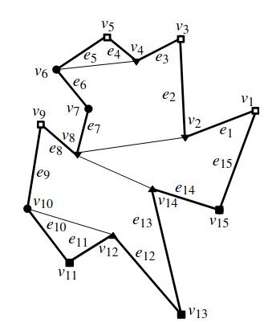
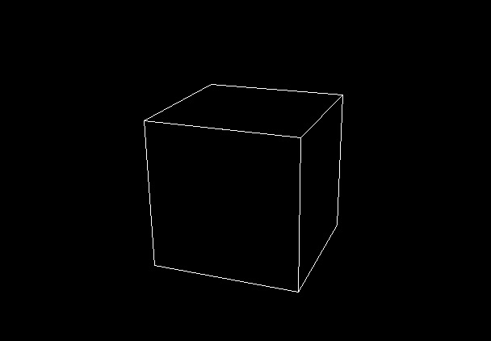

december adventure 2023
This year I decided to go on a December Adventure, where I try to work on a project a little bit every day of december.
My goal is to bridge the abstraction gap by learning to write programs in C. As a learning project, I'm building a 3D engine/projector inspired by moogle and pinhole (I technically began working on it in november, but that's what I have going on at the moment so I'll roll with it).
Log
31
This is the final entry for this year's December Adventure! What started as a simple C learning project became a journey through computer graphics, with a way-too-long dive into hidden-line removal techniques. But all in all, I think I made good progress on "bridging the abstraction gap". Pointers don't seem so scary anymore, and having to manage memory manually made me appreciate (and actually understand) garbage collection. I also learned the difference between a programming language's specification and its implementation, which wasn't really clear for me up until now.
I'm not done with this project though: I just started working on a stack-based interpreter for reading input files à la OpenSCAD (video above), and I want to keep working on it this January. I will make a dedicated entry in the projects section, but I won't be updating this page anymore (though I'll still be posting about it on Mastodon).
I wish you all a happy new year, see ya!
30
A little progress: I caught a few edge-cases where the segments are passing through some vertices, but now I have to deal with (I think) floating point precision stuff ? Geez, this is so frustrating...
29
Still working on the hidden-line removal function. I got the blinking edges fixed by introducing some tolerance on the intersection check. However we now have some weirdness when a line gets right behind a triangle vertex.
28
Had some time to try out another way of doing hidden-line removal. I previously mentioned plotter.vision, which is where I got the inspiration for this method: instead of processing one pixel at a time, we calculate the intersection between the different segments. Although this version is still glitchy, it is way faster than what I've been doing so far.
25-26-27
Spent most of my time with my family and friends. So not much progress these three days. During a train ride, I jotted down some ideas on ways to improve the hidden-line removal, but that's about it.
24
We finally got our prisms back! Let's recap:
The early version of this program (which implemented the prisms from day 9) stored 3D models as a collection of lines, which is enough for wireframe rendering, but not for solid objects. Indeed, we need to know which way a facet is turned, so we can decide if we should draw it or not.
Now, the easiest way to know which way a face is turned is to calculate the cross-product of two of its edges, which gives us a normal vector which we can then use to determine the face's orientation. However, for this to be valid, we need to be sure that every edge of a face are in the same plane. If we're careful with how we create our models this could always be the case, however we can enforce that constraint by restricting our model to having only triangular faces: that way we can be sure that all the edges forming a face are coplanar (since three points can only form one plane), and we get the added benefit of being able to import STL files, which are stored as a collection of triangular faces.

That's great and all, but how do we turn arbitrary polygonal faces into triangles ? In other words: how do you triangulate an arbitray polygon? Well, this question have several answers, and I got out of this rabbit-hole with a comprehensive algorithm from Computational Geometry. This involved hacking together a doubly linked list and a stack data structure, which took me a while to get working.
Now, where do we go from here ? Maybe try and rewrite some more primitives, or work on the still slow and glitchy hidden-line removal function (the book had some interesting ideas for that) ? We'll see!
23
The algorithm described in the book is based on doubly linked lists, which I had to learn to implement in C. I have nothing to show for now, but the first tests seem to work pretty well!
22

Remember when I talked about implementing a second camera and stuff ? Well turns out I'm not doing that right now. Instead I found a promising algorithm for polygon triangulation in Computational Geometry by Mark de Berg, Marc van Kreveld, Mark Overmars, and Otfried Schwarzkopf, so I'm back into writting primitives again.
Picture excerpt from Computational Geometry by Mark de Berg, Marc van Kreveld, Mark Overmars, and Otfried Schwarzkopf.
21
Sick day!
20
More UI stuff: I added some buttons and made them clickable!
Also, I think this gave me a sense of where I want this project to go: the idea would be to import a STL file, and have several buttons that could toggle various rendering options. Kind of a pedagogical tool for explaining how 3D rendering works!
So right now I have a "BFC" button, which toggles back-face culling, and "HLR" which trigger hidden-line removal. I'm thinking about maybe having a second "side-view" to show the effect of the back-face culling better ? I need to think about it...
Listening to: Sweat by Five Alarm Funk
Credit for the 3D model: Low poly Chocobo by kijai (CC BY)
19
Leaving the HLR alone for now, and dipping my toe into UI design instead. This is completely uncharted territory for me: all my programs so far have been CLI, so I'm pretty much playing by ear. I used GIMP to draw the icons and export them as C files. I then copy the icons on screen, picking one or the other depending on whether or not the "orbit mode" is toggled.
Credit for the 3D model: Low Poly Doge by Mattias Selin (CC BY-SA)
18

Started refactoring, and broke HLR... I'll try to fix that tomorrow.
17
A bit of progress today:
- Fixed a bug in the bounding box checks for the hidden-line removal function
- Added an "orbit" mode for moving the camera around an object
However, this thing is a mess: lines of code copied and pasted, things I should refactor, unused functions... I've tried cleaning it up twice now, but both time I couldn't settle on a nice way to organize everything.
Don't know if I should start rewriting everything from scratch or clean things up piece by piece...
16
Tried to rewrite the hidden-line removal function, but could not get the new version to work. I think I need to get mind off the performance issues for now. Maybe work on the controls and primitives ?
15
Back at it again. This time I'm looking into optimizing the hidden-line removal process. Here's how I've been doing it:
- When drawing a pixel, go through the whole list of triangles
- For each triangle, check if it hides the point corresponding to that pixel in object space
- Repeat for every pixel
Clearly, this is suboptimal. I wasn't able to render the above Utah teapot this way. The first improvement was to sort the triangles by their position on the Z-axis (from the closest to the furthest away from the camera). This way, we know we can stop whenever we reach a triangle that is completely behind the point we're currently checking.
However, the real boost came from implementing bounding boxes: before doing the pixel-per-pixel check, we can eliminate every triangle whose bounding box is too far away from the line we're currently drawing. That way, a lot of useless calculation can be avoided.
I think we can still go faster. For example: since every line is part of a triangle, maybe don't need to check the triangles that are beyond the one we're checking ?
Reading that back, I'm not sure I'm making a lot of sense... Anyway, it is faster now, and I need some sleep. Bye!
14
No coding today, too tired. Instead I looked into polygon triangulation, since I might have to use that when rewritting the primitives.
13
Got cleaner lines out of my hidden-line removal function, but it is still way too slow (even after sorting the triangles along the Z axis). So instead of applying it on each frame, I only trigger it when a key is pressed (got the idea from plotter.vision by Trammell Hudson).
I needed some objects to test it out, and since I didn't have the energy to write anything more complex than a cube, I made an STL parser instead. Appart from a skippable 80 bytes header, STL files are pretty minimal: one 32-bit integer for the number of triangles in the model, followed by the data for each triangle. This meant that loading them into my data structure was pretty straightforward.
There is definitely room for improvement in my hidden-line removal scheme, so I think tomorrow I'll give bounding box a try.
Credits for the 3D models:
- torus by Wikimedia user Anybob (CC0)
- Low Poly Stanford Bunny by johnny6 (CC BY-NC)
12
We now have hidden-line removal! I couldn't find an algorithm I understood, so I wrote my own. Here is how it works: in Bresenham's line algorithm, before drawing a pixel on screen, we cast a ray from the camera center to the corresponding point in object-space. If this ray intersect a face before hiting the object, the pixel is skipped.
Right now it is very slow (every triangle is checked, for every pixel), and a bit glitchy (some edges intersect with the triange they're part of). I think I can speed it up by doing some bounding box checks, and by sorting the faces by their position along the Z axis.
11
Wireframe is good, but solid models are better.
The key to creating the illusion of a solid object choosing which line to draw. The way Elite did it is through a technique called back-face culling. In a nutshell, the program checks whether each face of the model to is facing the camera, and hides it otherwise.
The issue is up until now, I only stored the edges of the 3D model, and not the faces. This meant I had to create a new data structure, along with new primitives.
You may notice that this new cube has its face divided into triangles. This is because the way we find a normal vector for each face is by doing a cross product on two of its edges. Therefore each pair of edges gets associated with one face, hence the triangles.

By adding a boolean array to the structure, I can tell the program to skip some of the lines when rendering. That way I can draw faces that look like arbitrary polygons.
Now, this works well for convex objects (which I believe is the reason why the ships in Elite all look a bit "chonky"), but not for more complex shapes. For that, I need to look into hidden-line removal.
10
Today was mostly cleanup and refactoring. I'm not really sure about the way I've split up the code, but I'm keeping myself from doing too much rewriting as there are still things I want to implement.
A comment from AxWax on the Fediverse made me discover Elite, a 1984 classic game for the BBC Micro which uses wireframe graphics, and whose source code has been thoroughly documented.
This led me to learn about back-face culling, a technique that makes 3D model look more "solid". I'm tempted to implement it, but this would imply changing the way I store 3D models, which would mean rewriting all of the code for the primitives.
Finally, I added a new page for the notes I'm taking while working on this project.
09
Finally solved the CPU usage issues! To understand, here is what my program does at each frame:
- Apply 3D transforms to the model
- Project the edges onto a 2D plane
- Apply Bresenham's line algorithm to draw the 2D lines on screen
The problem arose when one or both ends of an edge came close to the camera center:
- Since the 2D coordinates are proportional to the inverse of the distance between the object and the camera, the resulting projected edge would in some cases become extremely long.
- But Bresenham's line algorithm draws a line one pixel at a time. Specifically, for implementation used by SDL, the longer the line, the more memory it tries to allocate.
Therefore the first version of my program would crash when the OS ran out of memory to allocate.
My first solution was to reimplement Bresenham's algorithm. This didn't really fix the memory problem rather than turn it into a CPU usage one: while my program stopped requesting more memory than the OS could provide, it would instead spend ages drawing an excessively long line one pixel at a time.
The solution I implemented today was simpler: cut the lines where the screen ends. Duh. As expected, this dramatically improved the performances which allowed more fluidly inside the scene. Hurray!
I felt good, so I also spent a little time rewriting the controls so I could use the "ZQSD" keys (the French "WASD") to move around.
Good day!
08
Rotations in the previous version were centered around the origin of the scene, which felt weird when the camera wasn't centered at the origin. After implementing homogeneous coordinates, it was easier to switch things around and have the rotations centered at the camera, which seems more natural. I still have to fix some CPU usage issue that comes from lines being too long when projected.
07
I was looking for a better way to calculate transforms (translation and rotation), so I learned about homogeneous coordinates, with allows one to encode rotation and translation in a transformation matrix. This appears to be a cleaner way to calculate point transformations, but I will have to wait until tomorrow to try.
06
Not much to show today. After putting my code online, I got self conscious and started rewriting everything to try and make it look pretty. The problem is: I have no idea what pretty C code looks like (if there is even such a thing). As you can guess, having such a hazy goal only brought me frustration and, after an hour of rewriting the same file over and over again, I decided to call it a day.
What did I learn from this ? Well, that while having a lot of experience writing Python code, I'm still a beginner when it comes to C. This means that my code will be messy, and this is fine. My goal is to learn, so I should focus on exploring ideas and getting things to work, all while developping a better understanding of the language (case in point: I still have no clue about how scope works).
An interesting and somewhat related read: "Do it the dumb way first" by Dave Gauer.
05
I continued splitting things into smaller files. I now understand the point of header files: they store function declaration so the compiler can tell you when you mess up without needing the whole function definition (which you might not even have access to). I think.
Also, my messy code is now in a GitHub repository.
04
Didn't add anything new today, but I did some cleanup and split my code into smaller files. Thus, I learned about header files which, coming from Python, did not make sense to me (why two separate files ?). It works now, but I think I'll still have to play with it to really wrap my head around it.
I still have some cleanup to do for tomorrow, but eventually I'd like to add some other primitives and/or look into reading input files.
03
As expected, someone on StackOverflow had the same exact problem: turns out the SDL_RenderDrawLine doesn't like it when you tell it to draw extremely long lines. So when an edge ends up between the camera and the focal plane, its projection on the focal plane can become very long. This makes SDL try to allocate more and more memory to draw the entire line, until it can't anymore and crashes.
An easy fix suggested by the top answer was to tell SDL to use another method to to draw lines, which works, but that led me to wanting to learn about line drawing algorithms. I ended up reimplementing Bresenham's algorithm. So now my program doesn't take up all of the available memory, and I have an array of bytes containing the pixel data that I could export directly as an image.
02
Today I learned that the word I had to search for in order to fix my problem was "profiling".
I added a new target with the relevant options to my Makefile, learned about gprof, and discovered that I was recalculating the whole the rotation matrix for every single vertex of the model. As a fix, I used an array to store the matrix values, updated it only once per frame, aaand... I'm still getting performance issues. I'll have to investigate this further tomorrow.
01

I already have a few 3D primitives working, so today I added a simple "grid" function which draw a 2D plane. This led me to realize that my program starts lagging severely when the grid is too large.